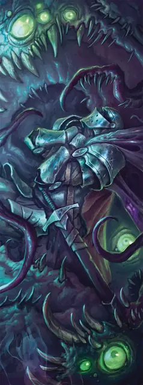

Шоггот
Shoggoth
Огромная Аберрация, Хаотичная Злая

Класс Защиты 15 Инициатива +7 (17)
Хиты 172 (15к12 + 75)
Скорость 30 футов, Плавания 30 футов, Лазания 30 футов
| мод | спас | ||
|---|---|---|---|
| СИЛ | 22 | +6 | +6 |
| ЛОВ | 16 | +3 | +7 |
| ТЕЛ | 21 | +5 | +9 |
| мод | спас | ||
|---|---|---|---|
| ИНТ | 20 | +5 | +5 |
| МДР | 17 | +3 | +3 |
| ХАР | 8 | −1 | −1 |
Сопротивление урону Дробящий, Колющий, Рубящий
Иммунитеты Холод; Опрокинутый, Опутанный, Схваченный
Чувства Тёмное зрение 120 футов, пассивное Восприятие 13
Языки Глубинная речь, Телепатия 60 фт.
Опасность 11 (7 200 опыта; БВ +4)
Особенности
Амфибия. Шоггот может дышать как воздухом, так и под водой.
Подражание. Шоггот может подражать звукам животных и голосам гуманоидов. Слышащее такие звуки существо может понять, что это подражание, только если преуспеет в проверке Мудрости (Проницательность) Сл 13.
Уязвимость к очарованию. Шоггот совершает с Помехой спасброска на избежание или окончание состояния Очарованный.
Действия
Мультиатака. Шоггот совершает три атаки Ложноножкой. Он может заменить одну из этих атак использованием Всасывающего залпа, если он доступен.
Ложноножка. Бросок рукопашной атаки: +10, досягаемость 15 фт. Попадание: 15 (2к8 + 6) Дробящего урона плюс 11 (2к10) урона Звуком, и цель Схвачена (Сл освобождения от захвата 16) одной из четырёх ложноножек.
Всасывающий залп (Перезарядка 4–6). Спасбросок Силы: Сл 18, одно Схваченное шогготом существо. Провал: 22 (4к10) урона Звуком, и шоггот с силой выстреливает целью из себя. Состояние Схваченный оканчивается; цель отталкивается на расстояние вплоть до 30 футов по прямой от шоггота, а также Оглушена и Ошеломлена до конца своего следующего хода. Успех: Только половина урона.
Реакции
Хладный бросок. Условие: Шоггот должен получить урон Холодом. Эффект: Шоггот перемещается на расстояние вплоть до своей Скорости и может совершить с Преимуществом одну атаку Ложноножкой.
Бонус мастерства +4
Среда обитания Арктика, Болота, Прибрежье, Подземье
Сокровища Отсутствуют
Шоггот
Громадный аморфный хищник
Шогготы — массивные отродья с колышущимися волнообразными телами и древним, жестоким разумом. Созданные старцами, первые шогготы возводили циклопические города и исполняли опасную работу в забытые эпохи. Со временем шогготы набрали силу и низвергли своих творцов. С тех пор они таятся в руинах древних городов и потаённых уголках мультивселенной. Чаще всего шогготы прячутся в дальних ледяных краях: жгучий холод лишь бодрит их чудовищные тела.